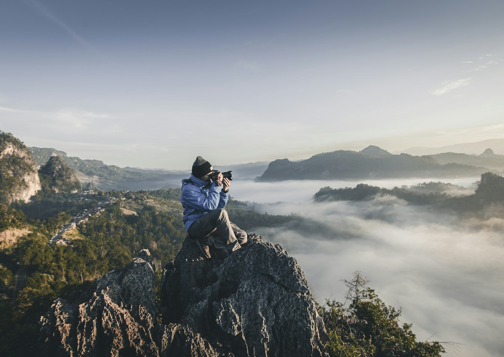
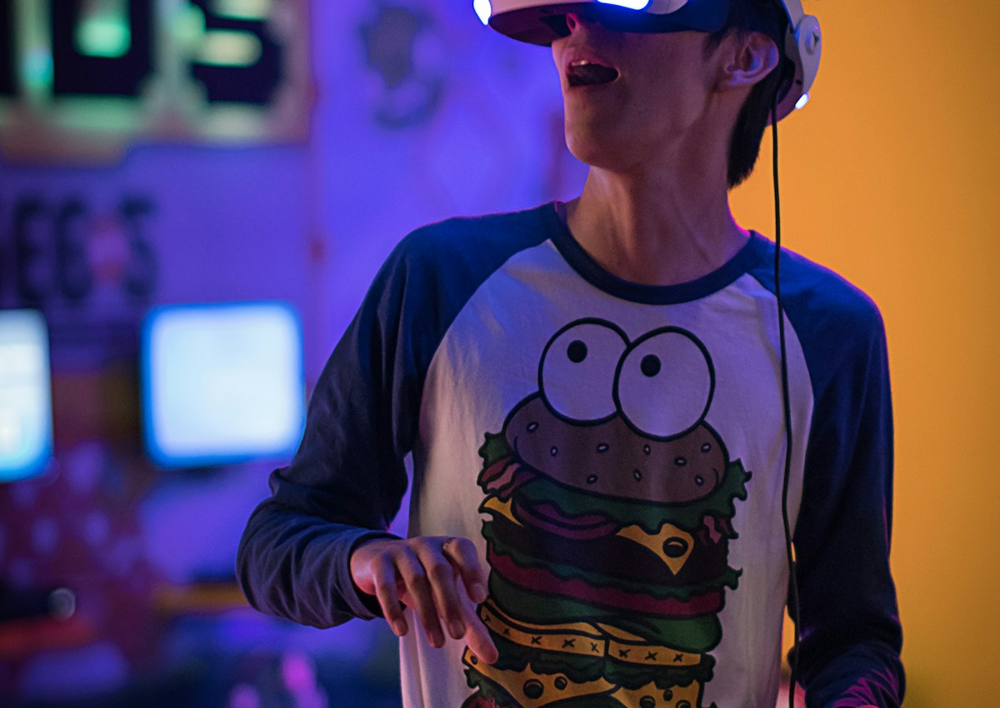

Production setup
Production-сцена для коммерческого проекта: свет, окружение, визуальный setup, AI-кадры и ощущение реальной съёмочной площадки.
Сцена должна ощущаться снятой, а не сгенерированной
Главная задача production setup — создать визуал, который воспринимается как кадр из реальной съёмки. Для этого важны не только объект и фон, но и свет, камера, фактура, воздух и логика пространства.

Съёмочная логика: даже AI-кадр должен иметь понятный источник света, ракурс и ощущение камеры.
Свет задаёт жанр: premium, industrial, dramatic, soft commercial или tech atmosphere.
AI помогает быстрее собрать визуальную гипотезу
До реальной съёмки можно быстро проверить композицию, настроение, локацию, световую схему и визуальный стиль. Это экономит время на препродакшене и помогает команде раньше увидеть будущий результат.

Tech-сцена: окружение помогает усилить ощущение продукта, технологии или бренда.

AI-визуал может работать как moodboard, pitch-кадр или основа для будущего ролика.
Команда раньше видит будущий кадр
Хороший setup помогает избежать абстрактных обсуждений. Вместо слов “хотим красиво и технологично” команда видит конкретный визуальный ориентир: какой свет, какая камера, какая атмосфера и какой уровень production.
Production-сцена до production
Проект даёт визуальную основу для ролика, кампании или презентации: сцена уже выглядит собранной, понятной и готовой к дальнейшей разработке.
Что входит в setup
Визуальная концепция, референсы, AI-кадры, световая логика, описание сцены, moodboard и рекомендации для production-сборки.